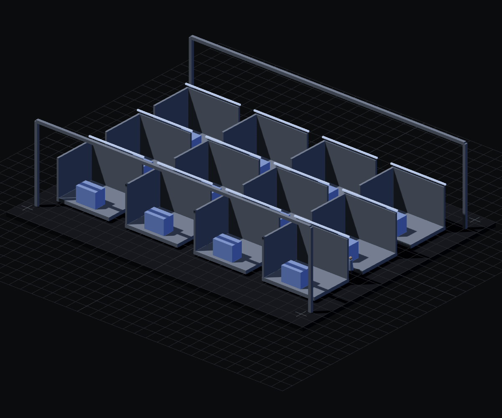
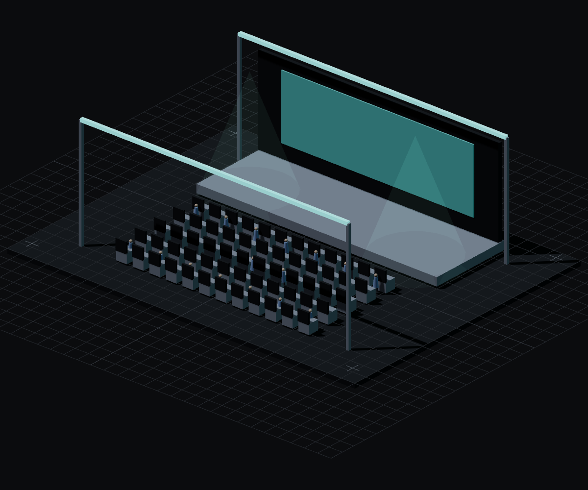
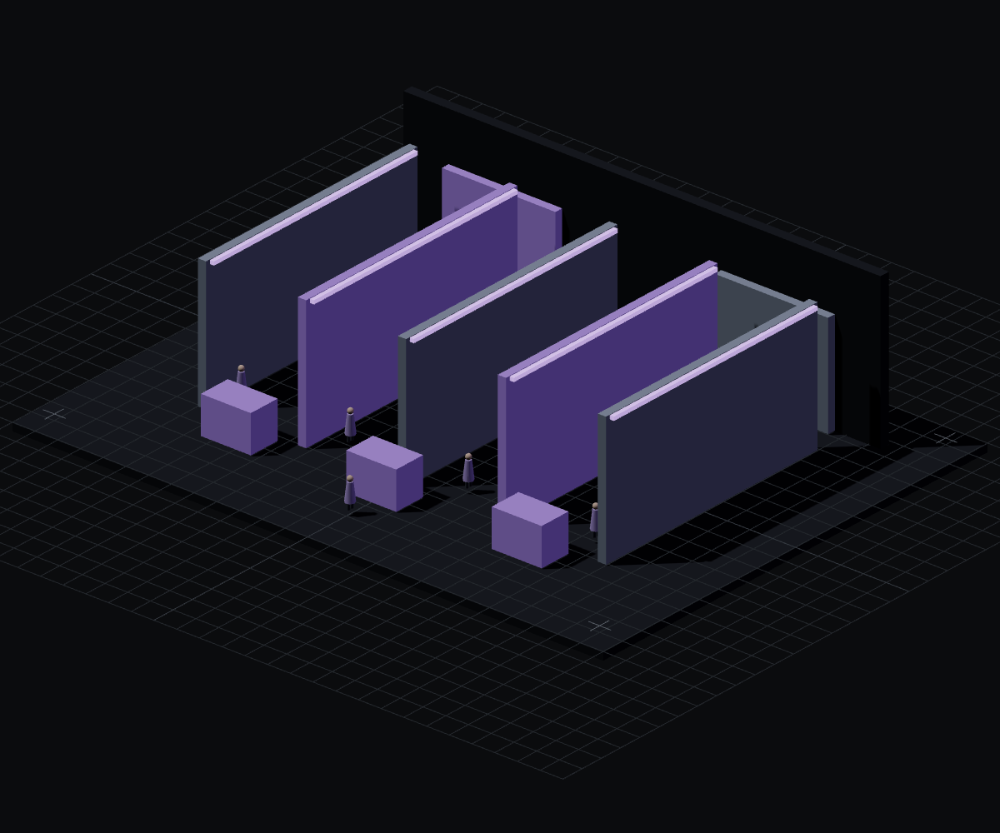
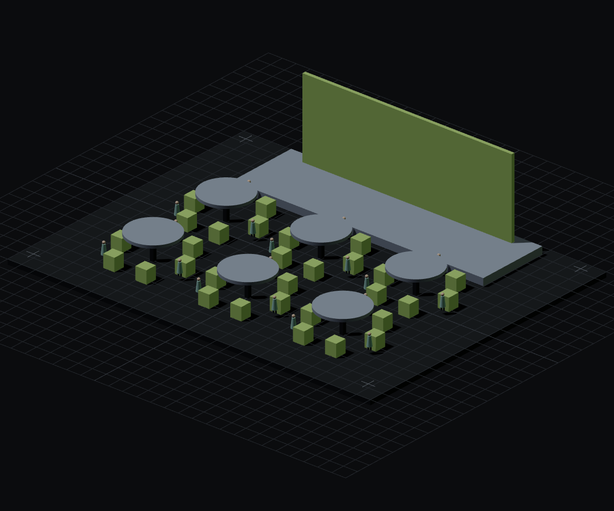
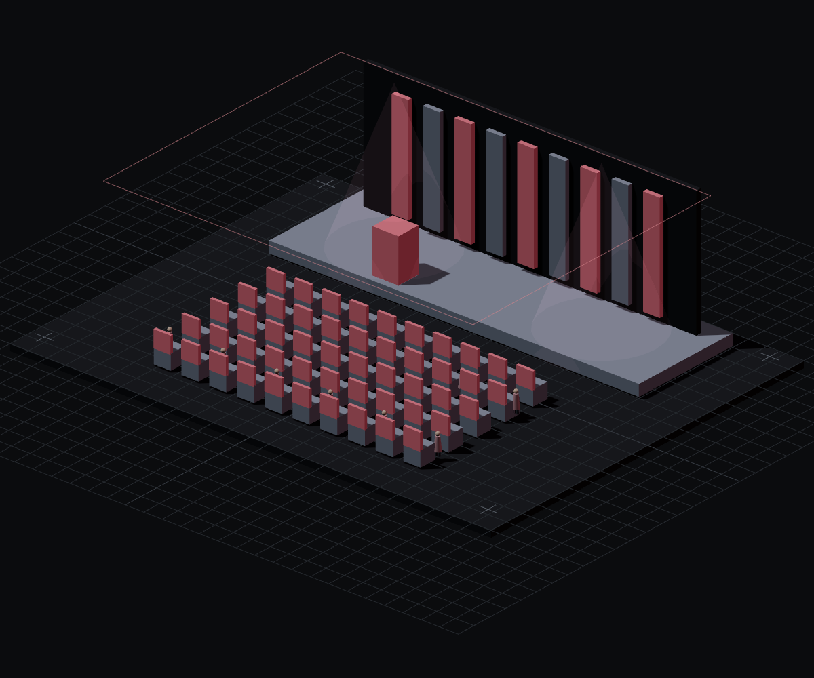
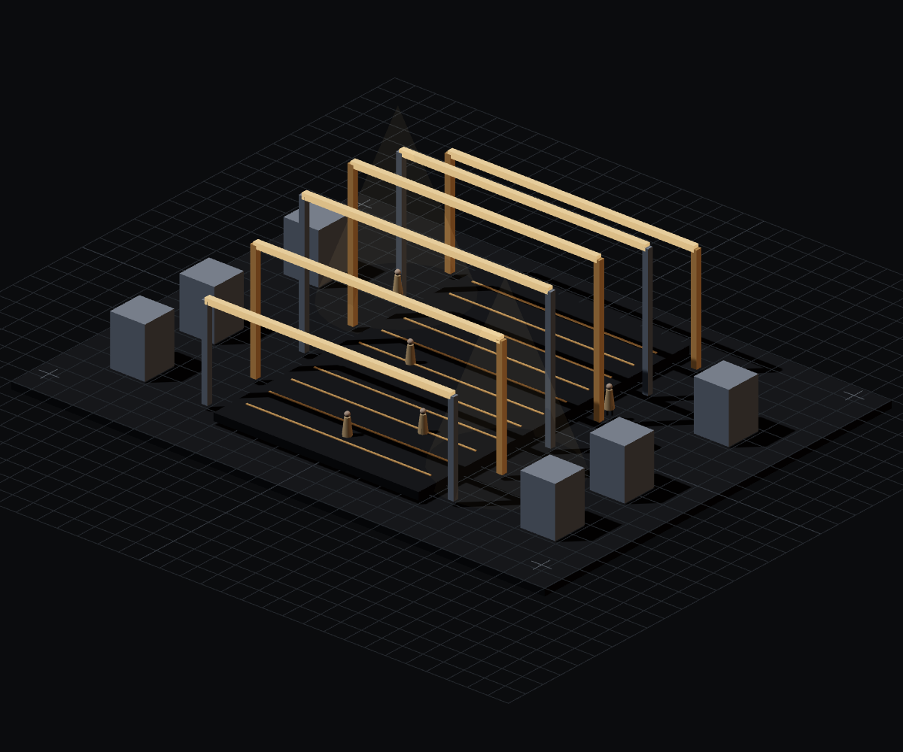

空间视觉示意43K㎡ / 202401 / 2024 · 43,000㎡
2023年国际能源变革论坛——能源技术创新分论坛
项目负责人 / 全周期执行查看项目
统筹开幕式、成果对接、路演发布、展览展示与交流研讨，完成材料收集、合同签署、搭建、执行、回款、结算与审计。
EVENT OPERATION / ONSITE MANAGEMENT
SELECTED PROJECTS / 2021—2026
六个项目，记录从前期筹备、资源协同到现场执行与结算交付的完整路径。

空间视觉示意43K㎡ / 202401 / 2024 · 43,000㎡
统筹开幕式、成果对接、路演发布、展览展示与交流研讨，完成材料收集、合同签署、搭建、执行、回款、结算与审计。

空间视觉示意78K㎡ / 202502 / 2025 · 78,000㎡
围绕会、赛、需、研、演五大板块，完成军工集团、专精特新企业集群和高技术装备集群的对接、执行、回款与收尾。

空间视觉示意0→1展厅 / 202303 / 2023 · 0→1
负责展厅从零到一的筹备落地、内容迭代、设备维护、日常接待讲解和客户参访体验优化。

空间视觉示意CSV交流 / 训练营04 / 2023 · 系列项目
策划执行投融资交流会、CSV 高阶训练营、孵化器政策解读等活动，并联动大院大所与专家推进项目开发。

空间视觉示意CCF论坛 / 202305 / 2023 · 论坛
完成论坛的嘉宾、议程、场地、供应商、物料与现场执行协调，保证多方协作下的活动体验。

空间视觉示意SEASON2021—2306 / 2021—2023 · 节庆
围绕端午、万圣、春节等节点，结合展演与文创产品属性完成场馆活动、线上线下品牌宣传和资源库维护。
A PRACTICE OF MOVING THINGS FORWARD
我是高长宇，
一名把事情推进到底的活动运营者。
从会展、政企会议到品牌活动与展厅运营，我把需求、团队与供应商连接起来，推进筹备、现场执行与交付复盘。关注整体，也照顾每一个影响体验的细节。
FROM BRIEF TO DELIVERY
从客户目标出发，梳理需求、方向、预算与排期，把创意、空间、人员和供应商放进同一张执行地图。
跟进搭建、物料与人员分工，协调现场执行进度，在突发状况出现时迅速判断并给出可落地的处理方案。
归集项目文件，跟进回款与财务结算，对接审计，完成项目复盘与结案报告，让一次交付沉淀成下一次的 SOP。